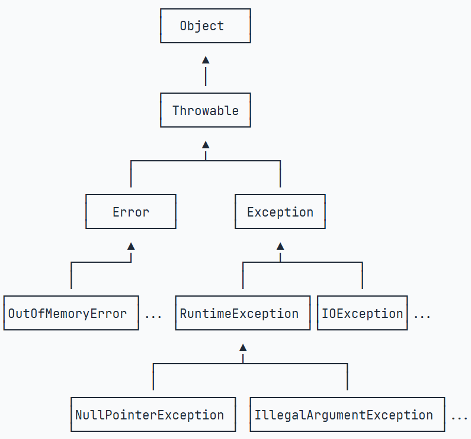

Java学习笔记（四）：异常处理
声明：本篇笔记部分摘自《Java核心技术（卷Ⅰ） - 机械工业出版社》及Java教程-廖雪峰-2025-06-16，遵循CC BY 4.0协议。
存在由AI生成的小部分内容，仅供参考，请仔细甄别可能存在的错误。笔记中有一些代码例子沿用了廖老师的示例，这里为了方便读者运行示例，将主类名称改成了统一的Demo。如涉及侵权请联系我反馈，我会尽快将其删除。
终于啃下了面向对象这一个大难关，我们后面篇幅也可以短一些了，学轻松一点吧：
一、Java异常
1.什么是异常
我们在写程序时，经常会遇到各种情况，例如：
- 期望接收一个整型值的输入，但是用户输入了字符串，触发
NumberFormatException异常，程序崩溃并停止运行； - 试图读取某个不存在的文件，或者写错了路径，触发
FileNotFoundException异常，程序崩溃并停止运行； - ……
但是，我们在日常使用各种APP或者网站时，很少遇到由于错误操作或者突发情况，导致程序直接卡死退出的情况：
摸鱼刷视频时网络断开连接，软件停止播放并显示“正在缓冲”提示，而不是直接崩溃推出；- 输入了格式不对的手机号，注册/登录表单标红提示“格式错误，请仔细检查”，而不是直接跳转到错误警告的页面；
- 蓝牙耳机断开与主机的连接，语音提示“蓝牙已断开”并且开始搜索可用的主机，而不是直接关机；
为了提升用户的体验，也为了提高程序的健壮性（robustness，鲁棒性），一些成熟的程序都会对一些预料到的错误情况预先定义好处理方式，在触发这些情况时按照提前定义的“预案”执行操作，就不会“手忙脚乱”乃至整个程序崩溃了。
程序是如何发现和捕获这样的错误的呢？
我们可以规定一套错误编码，如同C++中的 return 0 表示成功执行、返回其他数字时表示出现异常一样：
1 | |
这样，调用 processFile() 方法时，就可以根据返回值的情况判断是执行成功了，还是遇到了其他的问题。但是这样使用整数错误码表示运行结果不太友好，信息太少了以至于还得去“查表”才能知道是什么问题。
2.try-catch语句
Java内置了一套异常处理机制，总是使用异常（Exception）来表示错误。当遇到了一些错误时，程序会抛出这些异常，我们可以通过 try-catch 语句来“逮住”程序抛出的这些错误，并且定义一些处理方法。这样程序遇到错误时就有了处理方法，而不是直接崩溃并停止运行。
1 | |
这个例子以接收正整数输入为背景，处理了数据类型不正确、数值非法两个异常情况，其中数值非法的情况是通过 throw() 手动抛出的，是一个比较全面的例子，大家可以粘贴到IDE中运行体验一下。
需要注意的是，在循环中接收输入后，要及时调用 Scanner.nextLine() 方法（上例放在 finally 中，这样无论是成功执行还是触发异常，都会进行这一步处理）将输入的缓冲区清理掉，否则程序会一直判断缓冲区中的输入内容非法，从而反复触发异常，进入死循环的情况（别问我怎么知道的，问就是年少无知写出了差点卡死IDE的代码…）
3.异常也是一种类
异常也是一种 class，有如下的继承关系：

（感谢廖老师的图示，这样表示清晰多了，而且画起来估计也挺费时间的…）
从继承关系可知：Throwable是异常体系的根，它继承自Object。Throwable有两个体系：Error和Exception，Error表示严重的错误，程序对此一般无能为力，例如：
OutOfMemoryError：内存耗尽NoClassDefFoundError：无法加载某个ClassStackOverflowError：栈溢出
而Exception则是运行时的错误，它可以被捕获并处理。
某些异常是应用程序逻辑处理的一部分，应该捕获并处理。例如：
NumberFormatException：数值类型的格式错误FileNotFoundException：未找到文件SocketException：读取网络失败
还有一些异常是程序逻辑编写错误造成的，应该修复程序本身。例如：
NullPointerException：对某个null的对象调用方法或字段IndexOutOfBoundsException：数组索引越界
Exception又分为两大类：
RuntimeException以及它的子类；- 非
RuntimeException（包括IOException、ReflectiveOperationException等等）
Java规定：
- 必须捕获的异常，包括
Exception及其子类，但不包括RuntimeException及其子类，这种类型的异常称为Checked Exception。 - 不需要捕获的异常，包括
Error及其子类，RuntimeException及其子类。
4.异常类型表
| 异常类型 | 名称 | 触发场景 |
|---|---|---|
| Exception | 异常基类 | 所有异常的父类 |
| ├─ RuntimeException | 运行时异常 | 不需要显式捕获的异常（程序本身出错） |
| │ ├─ NullPointerException | 空指针异常 | 尝试访问null对象的成员或方法 |
| │ ├─ IndexOutOfBoundsException | 索引越界异常 | 访问数组、集合的无效索引 |
| │ ├─ SecurityException | 安全异常 | 违反安全策略的操作 |
| │ └─ IllegalArgumentException | 非法参数异常 | 方法接收到不合法参数 |
| │ └─ NumberFormatException | 数字格式异常 | 字符串转换为数字时格式错误 |
| ├─ IOException | 输入输出异常 | 输入输出操作相关的异常 |
| │ ├─ UnsupportedCharsetException | 不支持的字符集异常 | 使用不支持的字符编码 |
| │ ├─ FileNotFoundException | 文件未找到异常 | 尝试访问不存在的文件 |
| │ └─ SocketException | 套接字异常 | 网络套接字操作失败 |
| ├─ ParseException | 解析异常 | 数据解析失败（如日期格式解析） |
| ├─ GeneralSecurityException | 通用安全异常 | 安全相关操作的通用异常 |
| ├─ SQLException | SQL异常 | 数据库操作相关的异常 |
| └─ TimeoutException | 超时异常 | 操作执行超时 |
5.自定义异常
当我们在代码中需要抛出异常时，尽量使用JDK已定义的异常类型。但是有时如果实在找不到合适的已有异常，也可以自定义一个异常类型。自定义的异常也应该保持合理的继承体系。常见的做法是自定义一个BaseException作为“根异常”，然后，派生出各种业务类型的异常。通常建议从RuntimeException派生：
1 | |
其他业务类型的异常就可以从BaseException派生：
1 | |
自定义的BaseException应该提供多个构造方法：
1 | |
上述构造方法实际上都是原样照抄RuntimeException。这样，抛出异常的时候，就可以选择合适的构造方法。通过IDE可以根据父类快速生成子类的构造方法。
6.NullPointerException
在 RuntimeException 中，NUllPointerException（NPE，空指针异常）是比较常见的一种异常，我们来“重点关注”一下：
如果一个对象为null，调用其方法或访问其字段就会产生NullPointerException，这个异常通常是由JVM抛出的。Java中没有“指针”的概念，这里更多的是指一种“引用”（reference）的关系，其实区别也不是很大。
对于一般的 RuntimeException，应该遵循“早暴露，早修复”的原则，不能使用 catch 来隐藏。既然这种异常多在试图访问一个 null 值时发生，我们可以采取这样的策略来尽量避免这样的异常发生：
- 定义成员变量时立即初始化，如
String s = ""，因为String的默认值为null。
定位哪一个是null
调用 a.b.c.x() 时，如果触发 NullPointerException，我们需要调查清楚到底是哪一种情况：
a是null?a.b是null?a.b.c是null?
从Java 14开始，如果产生了NullPointerException，JVM可以给出详细的信息告诉我们null对象到底是谁：
1 | |
永远不要对报错信息感到畏惧或者是厌烦，这些信息会很清晰地告知我们问题的类型和出现和可能的成因，方便我们“对症下药”。最开始可以使用翻译工具翻译之后再看，或者询问AI；熟悉之后建议阅读错误信息原文并且尝试自己解决，这样才能积累编码经验。
比如说在这个例子中，很明确地告知了我们发生了控空指针异常，具体情况是"String.toLowerCase()"这个方法无法执行，原因是"p.address.city"是null。
二、断言
断言（Assertion）是一种调试程序的方式。在Java中，使用assert关键字来实现断言。
举个例子，玩家在支付虚拟货币兑换游戏道具时，需要判断玩家的货币数量是否足够，不足时就不能够成功兑换：
1 | |
这样，当玩家的金币数量不足时，就会触发 AssertionError 并且退出程序。注意这里只是用于演示断言的作用，实际开发中不建议使用这样的逻辑，使用 if 直接判断其实就行了。
Java断言的特点是：断言失败时会抛出AssertionError，导致程序结束退出。因此，断言不能用于可恢复的程序错误，只应该用于开发和测试阶段。实际开发中也很少使用断言，更多的是编写单元测试。
三、JDK Logging
在进行开发时，我们经常会通过 System.out.println()来打印某个变量的值，以便随着程序的运行观察和调试。
但是代码修改完成，准备编译发行版本是又需要去掉这些输出语句；后面调试时又需要给它们添加回来（将大象放进冰箱？），非常的繁琐。
一个好的解决方案是使用日志。输出日志，而不是用System.out.println()，有以下几个好处：
- 可以设置输出样式，避免自己每次都写
"ERROR: " + var； - 可以设置输出级别，禁止某些级别输出。例如，只输出错误日志；
- 可以被重定向到文件，这样可以在程序运行结束后查看日志；
- 可以按包名控制日志级别，只输出某些包打的日志；
- ……
因为Java标准库内置了日志包java.util.logging，我们可以直接用。先看一个简单的例子：
1 | |
运行上述代码，得到类似如下的输出（Intellij IDEA环境）：
1 | |
对比可见，使用日志最大的好处是，它自动打印了时间、调用类、调用方法等很多有用的信息。
再仔细观察发现，4条日志只打印了3条，logger.fine()没有打印。这是因为日志的输出可以设定级别。JDK的Logging定义了7个日志级别，从严重到普通：
- SEVERE
- WARNING
- INFO
- CONFIG
- FINE
- FINER
- FINEST
日志记录的默认级别是INFO，因此，INFO级别以下的日志，不会被打印出来。使用日志级别的好处在于，调整级别，就可以屏蔽掉很多调试相关的日志输出。
参考资料
- 廖雪峰的官方网站.Java教程[EB/OL].(2025-06-07)[2025-08-21]. https://www.cnblogs.com/echolun/p/12709761.html ↩